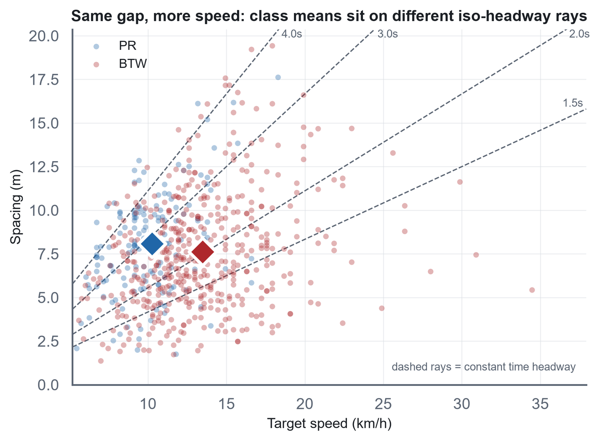

Flow Characteristics of Traditional Rickshaws and Battery-Operated Three-Wheelers in Non-Lane-Based Heterogeneous Traffic of Dhaka
Department of Urban and Regional Planning, BUET · Supervisor: Dr. Md. Musleh Uddin Hasan · with Dr. Md Asif Raihan (Accident Research Institute, BUET)
Battery-operated three-wheelers now share Dhaka's roads with pedal rickshaws in large numbers, but traffic models, and the policy horizon built on them, still treat the two as a single class. The thesis asks whether that assumption holds, and what follows for how the modes should be regulated.
Videographic surveys were manually extracted into vehicle-pair observations and modeled with tree-based explainable machine learning, supported by extensive descriptive and inferential analysis.
Papers from this work
Pair-Specific Time Headway Distributions and Covariate-Conditioned AFT Models for Pedal Rickshaws and Battery Operated Three Wheelers in Dhaka's Non-Lane-Based Heterogeneous Traffic
First author · Transportation Research Board (TRB) Annual Meeting 2027
Built an automated extraction pipeline: a YOLO26 detector paired with BoT-SORT tracking, then fitted pair-specific headway distributions and accelerated failure time (AFT) models to explain the distributional characteristics and shifts, accounting for covariate effects that feed both simulation modeling and the policy horizon.
Code on GitHubFollowing Behaviour and Its Regulation: A Time-Headway Study of Pedal- and Battery-Powered Three-Wheelers in Dhaka's Non-Lane-Based Traffic
First author
Built a maximum-likelihood location–scale regression of vehicle time headway with an exact kinematic-identity decomposition, applied to 898 video-extracted following events from two Dhaka corridors.
